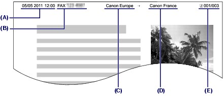

Sender Information
Sender InformationIf the unit name and unit fax/telephone number are registered, they are printed with date and time as sender information on the recipient's fax.

(A) Date and time of transmission
(B) Unit fax/telephone number
(C) Unit name
(D) The registered recipient's name is printed when sending faxes with the coded speed dial.
(E) Page number
 Note Note
For details, refer to the on-screen manual: Advanced Guide. Available sender information settings
- When sending faxes in black & white, you can select whether to print the sender information inside or outside the image area (TTI position). - You can select the date print format from three formats: YYYY/MM/DD, MM/DD/YYYY, DD/MM/YYYY (Date display format). |